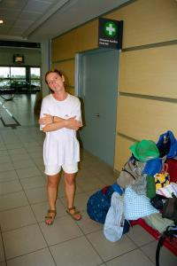
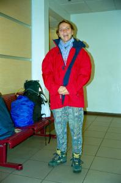
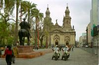

|
Vendredi 3 août
On part pour Najita (se prononce narita), l’aéroport de Tokyo. Il faut une
heure pour y aller en train. Et c’est parti pour une orgie et un tour de passe-passe
magique. L’orgie, c’est qu’on a trois repas en 12 heures de vol, ce n’est pas
si énorme, c’est vrai. Ce qui est énorme par contre c’est le nombre de petits
paquets de bretzels qu’on s’est enfilés à la queue leu leu, on en a même bourré
nos poches “pour plus tard”, il faut être prévoyant. Et aussi le nombre de canettes
qu’on a descendues. On a presque tout goûté, jus de pommes, de tomates, de tomates
épicées, d’oranges, canada dry, seven up, coca (on va quand même au pays du
coca, ne l’oublions pas, faut faire honneur à leur culture…), vin rouge, vin
blanc, et de l’eau tout de même. On n’avait pas vu qu’il y avait de la vodka,
sinon...
Le tour de passe-passe, c’est Garcimore qui nous l’a appris. Tu mets la souriche
dans l’avion à Tokyo à 17h40 le 3 août et ch’est magique, elle arrive à Chicago,
après 12 heures de vol, à 15h00 le… 3 août aussi!!!??? Soit 5h00 du matin au
Japon, du 4 août. C’est magique je te dis.
A l’atterrissage, on va se présenter à la douane le ventre dodu. Heureusement,
ils ne scannent pas les estomacs sinon on se serait fait refoulé vu toute la
nourriture qu’on a importée. Là, on remplit des formulaires débiles comme à
Tokyo, du genre “avez-vous de la drogue?” “ben oui et en plus je m’en vante!”,
“avez-vous de la nourriture?”, “juste des bretzels mais pas de panique, ils
sont ISO 9002 aux normes du maïs et du soja transgéniques américains”, “faites-vous
l’objet de poursuites judiciaires? En ce cas, veuillez vous présenter au comptoir
X, l’accès au territoire américain vous sera sans doute refusé”. Il n’y a donc
pas de menteurs aux US, qu’ils posent des questions aussi naïves?! Bref, notre
douanier (fort peu sympathique d’ailleurs) finit pas nous laisser passer. On
fait tout ça parce que le vol Chicago-Miami part du terminal 1 et qu’on a atterri
au 5. Il faut donc entrer obligatoirement sur le territoire américain et subir
toutes les tracasseries qui vont avec. A 18h00, après avoir eu tout de même
le temps de voir passer trois limousines longues à l’infini, on remonte dans
l’avion pour Miami. On nous sert à dîner. Ouf, on commençait presque à avoir
un petit creux… Ca fait tout de même 4 repas en 15 heures, plus les bretzels!
Trois heures plus tard, soit, suivant la logique des fuseaux horaires, à 22h00
(1h de plus en Floride par rapport à Chicago), on atterrit à Miami. On est un
peu paumé, on ne sait plus quand on doit dormir. Tout ce qu’on arrive encore
à faire, c’est manger. Surtout qu’à Tokyo, il est midi de demain déjà! Puis
on quitte les Etats Unis pour le Chili... sans passer par la douane! Officiellement,
nous sommes donc entrés aux US, mais pas sortis...
Samedi 4 août
On survole la Cordillère des Andes et ses pics enneigés. Ici c’est l’hiver
et à 9h00 du matin, on atterrigt dans le brouillard à Santiago, il fait 9 degrés.
Nous sommes en short et sandales! Il est 20h00 du 4 août à tokyo, ça fait 30
heures qu’on vole, tout ça pour passer du 3 août 17h00 au 4 août 9h00! C’est
encore un coup de Garcimore! En plus, ici ils parlent tous espagnol et pas nous.
On se balade dans Santiago, c’est super sympa cette ville. Il s’en dégage une
atmosphère spéciale. Ca nous fait penser à l’Europe de l’Est, aux pays ex-communistes,
même ambiance dans certains quartiers, sauf qu’ici c’était une dictature de
droite. Les chiliens sont très sympas, ils nous aident tous spontanément et
avec le sourire: pour prendre le bus, le métro, trouver notre chemin… Et plusieurs
connaissent deux ou trois mots de français.
On a commencé à apprendre l’espagnol (développer les photos, hôtels, manger)
et on s’est mis avec plaisir à notre nouveau régime alimentaire: le “1/4 pollo
con papas fritas”, autrement dit 1/4 de poulet rôti avec des frites! Ca requinque,
même les gens qui sont en train de sauter leur deuxième nuit consécutive.
La ville est très vivante, la Plaza de Armas est pleine de piétons qui flânent
ou vaquent mais ne restent pas passifs. On les comprend, ça caille. Et puis,
il y a les artistes de rue. 16h00, on se dit qu’une petite sieste, juste une
heure, sera la bienvenue. On se réveille à… 21h00. On n’a pas entendu le réveil,
tant pis, on enchaîne sur la nuit, on en a sûrement besoin, on mangera demain.
En plus de la fatigue, on a la flemme de sortir du lit, fait pas chaud et il
n’y a pas de chauffage.
Dimanche 5 août
Il a plu toute la nuit! Mais ce matin, grand ciel bleu. Froid mais sec. Tant
mieux parce que la douche (bien que chaude) est rude: la serviette n’a pas réussi
à sécher depuis hier. Et oui, on va être confronté à un problème nouveau: le
séchage du linge. Forcément, ça ne va plus sécher en 2 heures maintenent et
ça ne va pas s’arranger avant 3 mois!
On voit qu’on a quitté les pays chauds d’Asie. Ici, la vie reprend avec le
soleil: l’hôtel ouvre ses portes à partir de 8h00 le matin et les magasins restent
fermés jusqu’à 10h00, voire 11h00. “Empanadas al queso y té” pour le petit déj,
c’est-à-dire un friand au fromage et du thé. Ca réchauffe un peu, il fait environ
10 degrés.
Ce qui est génial ici à Santiago, c’est le nombre de rues piétonnes. Il y en
a plein! Et elles sont noires de monde. Partout règne l’animation. Ici un vendeur
de bijoux expose sur la place sous les palmiers, là un vendeur de protefeuilles,
là de ballons, de barbes à papa, boissons ambulantes, là encore un cireur de
chaussures, des photographes, des peintres. Et puis tous les spectacles de rue.
La famille chanteurs, celle des joueurs de tambours, les danseurs, les maquilleurs
d’enfants, les raconteurs d’histoires, les pierrots immobiles (statues), les
picacchu qui disent bonjour aux enfants et posent pour la photo, des marionnettistes,
etc. Et aussi l’orchestre militaire qui vient nous jouer un peu de classique
sous le kiosque. Et les gens participent. La place et les rues sont noires de
monde: familles, amis, couples. D’ailleurs le nombre de couples de 12 à 70 ans
enlacés partout nous surprend. Depuis 6 mois, on avait perdu l’habitude. On
remarquait les quelques personnes qui se tenaient par la main dans la rue au
Vietnam. Alors ici! En plus on voit bien qu’ils ont du sang latin...
C’est la semaine des enfants au Chili. Ce sont aussi les maxi soldes. Vu qu’on
a besoin de polaires, bonnets, gants et pantalons, ça tombe plutôt bien!
Cochon de lait-purée au déjeuner, poulet rôti-légumes en salade au dîner pour
moi. Je varie les plaisirs. Lionel s’est abonné, poulet-frites à tous les repas.
Suite du voyage : Santiago les colines
|
Chili
Santiago
|
Chili
Santiago
|
Chili
Santiago
|

Chili
Santiago
|

Chili
Santiago
|

Chili
Santiago
|
|
|